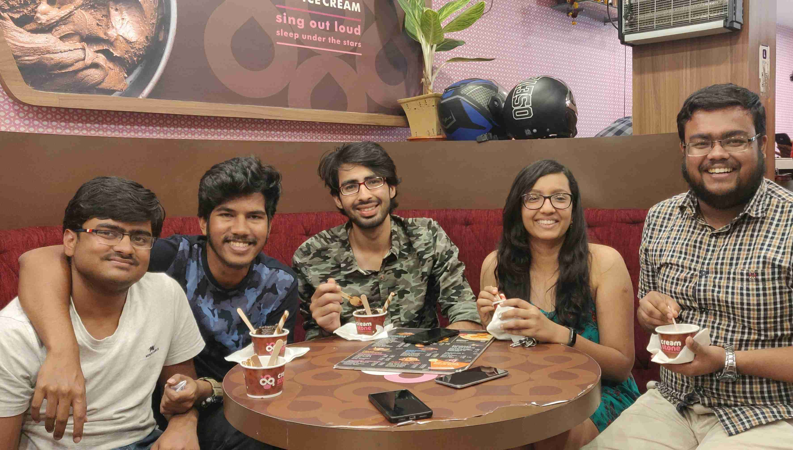

August 11, 2019
Shruti Shukla, an undergraduate student in
the Department of Electrical Engineering from the Y16 batch,
shares her thoughts on how she decided whether to go for an
academic or industry internship, as well as pens down the
process of securing her internship through SPO in detail. She
interned at Texas Instruments (TI), Bangalore in the
Summers’19 as an Analog Intern.
Texas Instruments Incorporated (TI) is an American
technology company that designs and manufactures
semiconductors and various integrated circuits, which it
sells to electronics designers and manufacturers globally.
TI is one of the top-10 semiconductor companies worldwide,
based on sales volume. Texas Instruments's focus is on
developing analog chips and embedded processors, which
account for more than 80% of their revenue. TI also produces
TI digital light processing technology and education
technology products including calculators, microcontrollers
and multi-core processors.

Hello folks, I am Shruti Shukla, a senior undergraduate
student in the Department of Electrical Engineering. I
interned at Texas Instruments (TI), Bangalore in the
Summers’19 as an Analog Intern.
While deciding on the third year summer internship, the first
step is to decide whether you want to go for an academic or an
industry internship. If you have a decent interest in both, it
would require some introspection. Ask yourself, what are your
expectations out of the two months. I strongly suggest
connecting with seniors, who have been in your place before. I
spoke to multiple seniors with different internships and
finally concluded my best-suited option. This would vary
according to your priorities, so it is important to spend some
time going over this to avoid making an uninformed decision.
 I decided this was the best time to explore the industry
because it could help me figure out if I wanted to work in a
company set-up after my undergraduate studies or not. I had
UGPs planned in the upcoming two semesters, and converting to
dual would always be an option to try research in case this
internship didn’t work out for me.
I decided this was the best time to explore the industry
because it could help me figure out if I wanted to work in a
company set-up after my undergraduate studies or not. I had
UGPs planned in the upcoming two semesters, and converting to
dual would always be an option to try research in case this
internship didn’t work out for me.
After this came the question of which companies I wanted to
apply to. The decision leading up to my internship at TI was
mostly guided by my decision not to apply for (read: prepare
seriously for) software and analyst profiles. The reason for
this was because I disliked coding and related work. Later on,
during my internship and subsequent UGPs, I finally realized
that you cannot ignore coding altogether, it is an important
skill to have, but yes, the type is certainly different from
what software profiles ask for, so it was okay for me. I liked
my departmental subjects so, core electrical profiles seemed
the best option for me.
Texas Instruments came on day 3 of the internship season. The
shortlisting was done based on a written test consisting of 4
sections- software, analog, digital and aptitude. It would be
good to ask seniors selected in respective profiles regarding
what type of questions are expected, preparation strategy,
etc. People were shortlisted in multiple profiles depending on
their test scores, I was selected in the Analog profile. If
you decently revise ESC201, EE210, and EE250, the test can be
cracked easily, as most questions were on basic circuit
theory, some on Op-Amps and a bit on Bode Plots. For the
aptitude section, some mock tests on pariksha.co could be
helpful.
 As for the interviews, there was one technical round followed
by one HR round. The interviewers didn’t even look at the
resume during the interview, they wanted to check one’s
intuition, and whether you have an in-depth understanding of
how basic circuit elements like capacitors work. Most of the
interview was based on RC Circuits and Op-Amps. Some basic
preparation resources are electronics-tutorials.ws, NPTL
lectures or youtube videos by IITM Prof Nagendra Krishnapura
on First Order Circuits and Op-Amps. If you have worked on a
circuits related project, it’s a plus, but if you haven’t that
won’t count as a minus. The HR interview was just a discussion
about why you want to join TI and about your future plans.
There were ten shortlists from our college (7 in Analog).
As for the interviews, there was one technical round followed
by one HR round. The interviewers didn’t even look at the
resume during the interview, they wanted to check one’s
intuition, and whether you have an in-depth understanding of
how basic circuit elements like capacitors work. Most of the
interview was based on RC Circuits and Op-Amps. Some basic
preparation resources are electronics-tutorials.ws, NPTL
lectures or youtube videos by IITM Prof Nagendra Krishnapura
on First Order Circuits and Op-Amps. If you have worked on a
circuits related project, it’s a plus, but if you haven’t that
won’t count as a minus. The HR interview was just a discussion
about why you want to join TI and about your future plans.
There were ten shortlists from our college (7 in Analog).
Before the start of the intern, we were periodically given
some quizzes to attempt, with goodies for the winners. Towards
the beginning, we were given mentor details who contacted
(well, most of) us with project details and related reading
material. Not everyone’s mentor did that, and my advice, in
this case, is to reach out to the HR on mail beforehand (there
are plus points for being proactive). The first week of our
internship was orientation (nostalgia to our first week on
campus), followed by eight weeks of work. Orientation
consisted of sessions by TI senior employees on the kind of
work TI does, IT Security sessions and profile specific and
Unix training.
The thing with TI is that a lot of your internship experience
depends on who your mentor there is, over which you have a
little control. However, from what I learned from working
there is, it is up to you how you handle it. You can have a
mentor, who hardly met you during your time, but if you are
yourself active, you can learn a lot from the people around
you, apart from your mentor. The open cubicle system of TI and
the absence of strict hierarchical levels ensure that you can
talk to even senior colleagues about things you want to learn.
Also, one of the things about TI that I liked, was the
flexible work culture. If you’re doing your job sincerely, you
can take as many breaks as you like. There is also a facility
like our New SAC in TI called Texins which has a music room,
badminton courts, TT courts, gym and a lot other sports
facilities. All the interns are encouraged to go there as
frequently as they’d like.
 Now, about my work - I was given a project to make validation
applications using LabVIEW which is a graphical coding
software. Thankfully, it was not the coding I was trying to
escape and it was cool to learn this software, especially when
I came to know of its tremendous applications. However, it was
not what I expected from my project, as I had wanted to work
on a circuits related project. So, it came up during my
mid-term review, that I could be given something different
other than LabVIEW. It was a singular thing that generally
doesn’t happen with interns, but I was given an opportunity to
explore a different team’s project. Though I didn’t fit well
there (apparently they worked with Visual C++, so I don’t
think I need to explain any further), the fact that I was
given this chance made me sure of the fact that, my role in TI
would not be some fixed thing set in stone if I joined here as
an employee. The senior employees would ensure that I was
getting the chance to explore where I fit in.
Now, about my work - I was given a project to make validation
applications using LabVIEW which is a graphical coding
software. Thankfully, it was not the coding I was trying to
escape and it was cool to learn this software, especially when
I came to know of its tremendous applications. However, it was
not what I expected from my project, as I had wanted to work
on a circuits related project. So, it came up during my
mid-term review, that I could be given something different
other than LabVIEW. It was a singular thing that generally
doesn’t happen with interns, but I was given an opportunity to
explore a different team’s project. Though I didn’t fit well
there (apparently they worked with Visual C++, so I don’t
think I need to explain any further), the fact that I was
given this chance made me sure of the fact that, my role in TI
would not be some fixed thing set in stone if I joined here as
an employee. The senior employees would ensure that I was
getting the chance to explore where I fit in.
What sets TI apart from other similar companies is that you
will be aware of the entire lifecycle of your product. A
design engineer will not just design, but will also have
active participation in the test engineer’s job and vice
versa, which I feel is important if you want to make a
holistic career. I received a Pre-Placement Offer after the
intern which I have accepted, in the hope of interesting work
and because the flexible work environment aligns with my life
ideologies. As for the PPO process, the interview consisted of
questions on RC Circuits, some general puzzles and mentor
feedback. Apart from technical knowledge, the ability to
perform and communicate well in a team, TI looks for people
who are willing to stay dedicated to the industry for long.
So, if you want to work long-term here, an internship would be
a great starting point. However, as I mentioned that the
process is a bit mentor-dependant, so there is a risk, it
might not turn out as you hoped.
I also want to say that these two months are for you to
explore, not just work but other life aspects as well. The
friendships forged during these two months may become stronger
than what you’ve had in college, so don’t drown yourself in
work with a singular mindset of bagging a PPO. At least with
TI, you would have a lot of time to enjoy the city of
Bangalore. Weekends would be off, so you can plan a lot of
holidays to neighboring places. Go there with an open mindset,
give your best and see what’s best for you.

Now some final piece of gyaan. To first years - Do not neglect
CPI as it will matter eventually in most places, to second
years - explore and start connecting with professors in your
field of interest if you want to go for research, or start
building skills you would want to reflect on your resume and
to third years - Do not fret about what mistakes you have done
in your past. Focus on what you know best and what you want,
and work with what you have currently, instead of what could
have been. My philosophy is to always work the best with what
you have currently, and it has seemed to work fine for me.
Good luck to all juniors. Feel free to ping me, in case you
need to discuss anything related to this.